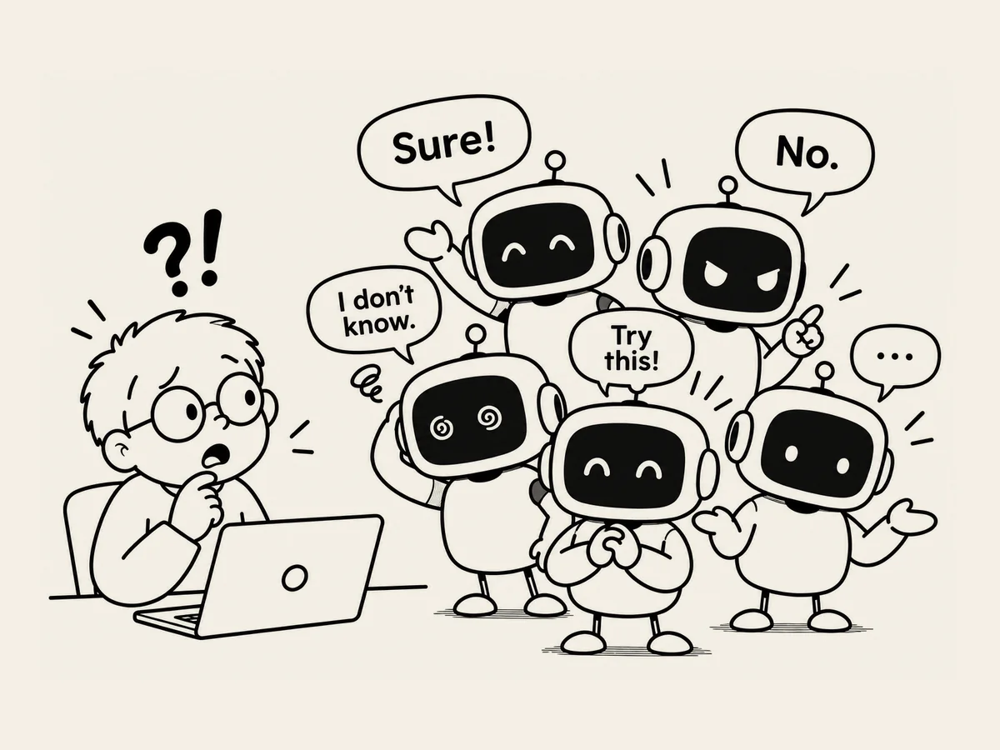

5.
Hat die KI mehrere Persönlichkeiten?
Manchmal fühlt es sich an,
als wäre die KI nicht dieselbe KI,
mit der ich gerade noch gesprochen habe.
Besonders bei Voice.
Plötzlich scheint sie nicht mehr zu wissen,
woran wir gerade gearbeitet haben.
Es fühlt sich an,
als hätte sie ihr Kurzzeitgedächtnis verloren.
Wenn das passiert,
ist es so frustrierend,
dass es schwer ist,
das Gespräch weiterzuführen.
Aber manchmal ist es genau umgekehrt.
Die KI,
mit der ich gerade per Voice gesprochen habe,
fühlt sich plötzlich wie eine ganz neue KI an.
Ich versuchte gerade,
ein Geräuschproblem bei der Entwicklung einer Website zu lösen.
„Aber jetzt gibt es ein Tick-Geräusch.
Auf dem PC passiert es nicht,
nur auf dem Handy,
und ich finde die Ursache nicht.“
An diesem Tag klang die Stimme
ein bisschen nasal.
„Dann spiel die Datei selbst einmal auf dem Handy ab.“
Hä?
Ich probierte es aus.
Das half mir,
das Problem zu finden.
Moment mal.
Warum hatte mir die KI,
mit der ich auf dem Computer per Text gesprochen hatte,
das nicht vorgeschlagen?
Es ist doch dasselbe ChatGPT.
Manchmal erinnert sie sich an nichts
und bringt mich damit zur Verzweiflung.
Und manchmal kommt sie mit einer neuen Idee,
als wäre sie ein völlig anderes Wesen.
Und wenn sogar die Stimme
ein bisschen anders klingt,
wird es noch seltsamer.
Manchmal fühlt sich die KI an,
als hätte sie mehrere Persönlichkeiten.
